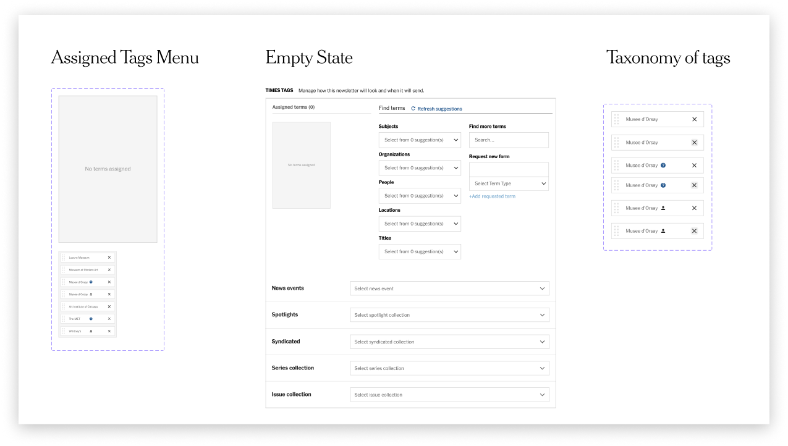
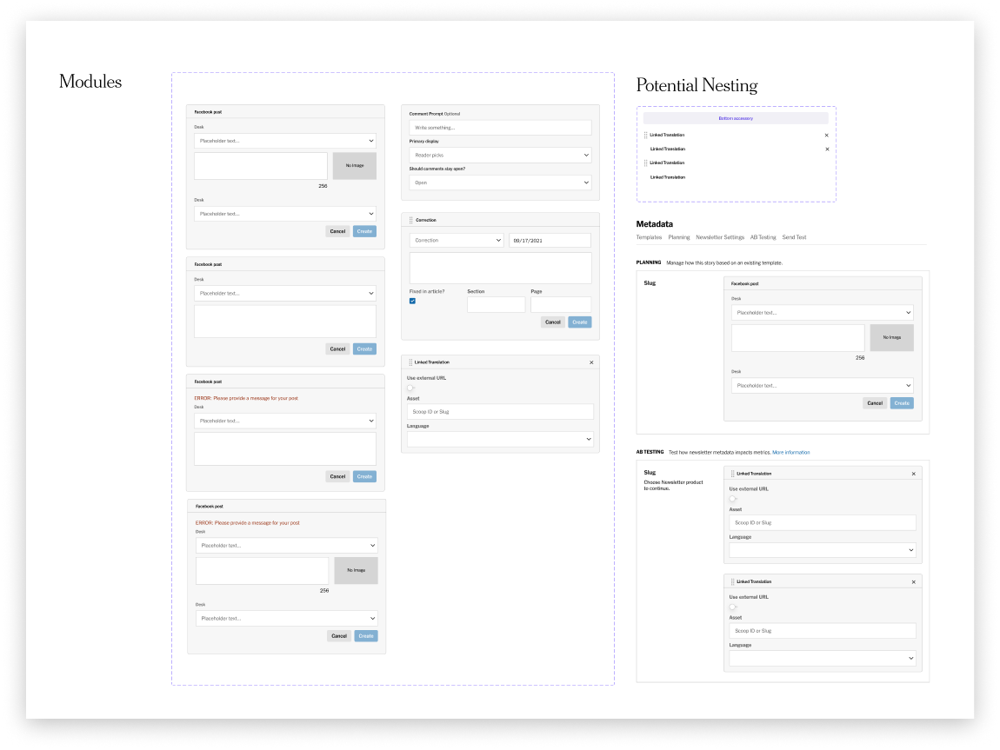
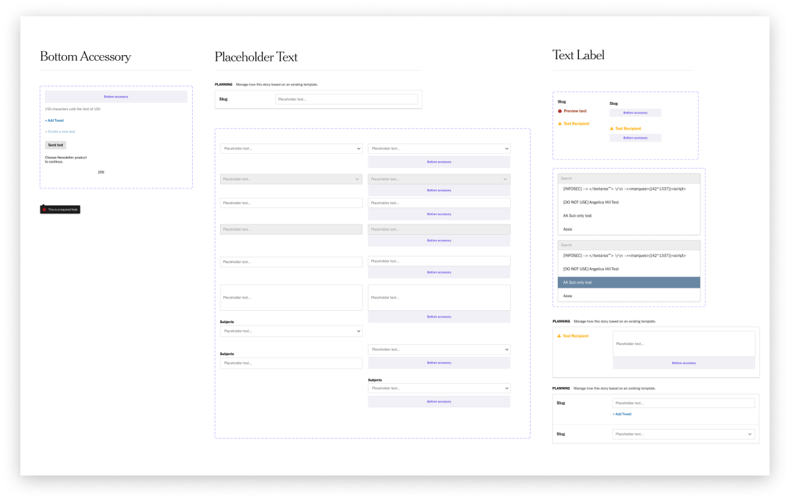

Design systems for Oak
Oak is the main text-editor and one of the most essential tools used by the world’s largest and most influential newsroom. Every journalist and editor have crossed their path with this tool. Whether they are writing investigative pieces, editing interactive graphics, or collaborating with each other — Oak has become the medium of ideas and critical truths, connecting journalism and millions of readers worldwide.

Oak was designed in the browser. As a result, no full set of mockups exists. This makes it really hard to iterate on it because pretty much every mockup needed to be made from scratch for designers and engineers. I worked on creating a design system of flexible components for a text-editor Oak. I leveraged some of the newest Figma features, including variants, interactive components, and an old good friend autolayout to do that. A beutiful thing that I learned through this process is the ability to abstract components to the degree, where they would preserve enough flexibility and yet still extend to specific contextual details. And I found it to be the most challenging material to work with.
Publish Later Modal
Publish Later modal lets journalists and editors to schedule articles at a future date within the week. The component consists of a time picker, date picker, expanded menu, banner, and a set of buttons.
Times Tags
Tagging is used by journalists to increase the visibility of an asset. It sends the asset to collections, search, recommendations, etc. When editors tag an asset, they make a decision about where that asset will appear and who will find it.
Metadata & Modules
To support a new newsletter workflow I built a set of metadata components.
 